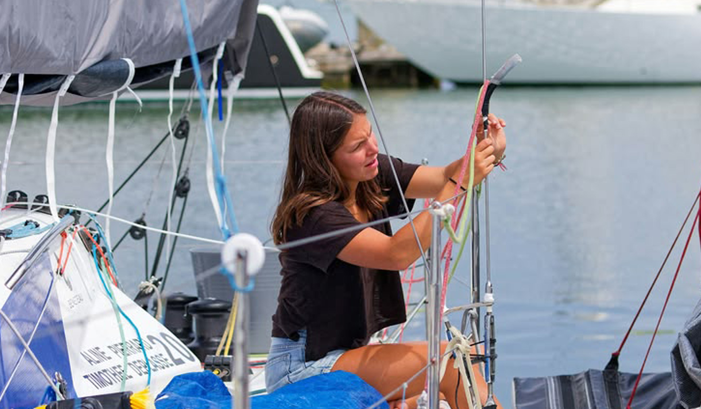

Crossing Open Water
Preparing to cross open water begins long before leaving the harbor. Supplies are checked and stored carefully, weather forecasts are watched closely, and every part of the boat is inspected before departure. Once the shoreline disappears behind the horizon, daily life changes completely. Time moves more slowly at sea, shaped by wind conditions, meals, watch shifts, and the constant movement of the water. Without roads, schedules, or nearby cities, attention shifts toward smaller routines and the quiet repetition of life aboard. Even simple tasks like cooking, sleeping, or navigating require more awareness while the boat moves continuously through open water.
After several days offshore, the distance from land becomes more noticeable. The horizon remains unchanged for hours at a time, broken only by waves, weather, and the occasional passing vessel. Living at sea requires patience and adjustment, especially during long crossings where weather can shift unexpectedly. Some days are calm and quiet, while others are shaped by strong winds, rough water, and long overnight watch shifts. Despite the isolation, there is also a sense of freedom that comes from moving without a fixed destination nearby. Arriving at a new coastline after days surrounded only by water makes each harbor feel temporary, unfamiliar, and rewarding at the same time.

Preparing to cross open water begins long before leaving the harbor. Supplies are checked and stored carefully, weather forecasts are watched closely, and every part of the boat is inspected before departure. Once the shoreline disappears behind the horizon, daily life changes completely. Time moves more slowly at sea, shaped by wind conditions, meals, watch shifts, and the constant movement of the water. Without roads, schedules, or nearby cities, attention shifts toward smaller routines and the quiet repetition of life aboard. Even simple tasks like cooking, sleeping, or navigating require more awareness while the boat moves continuously through open water.
After several days offshore, the distance from land becomes more noticeable. The horizon remains unchanged for hours at a time, broken only by waves, weather, and the occasional passing vessel. Living at sea requires patience and adjustment, especially during long crossings where weather can shift unexpectedly. Some days are calm and quiet, while others are shaped by strong winds, rough water, and long overnight watch shifts. Despite the isolation, there is also a sense of freedom that comes from moving without a fixed destination nearby. Arriving at a new coastline after days surrounded only by water makes each harbor feel temporary, unfamiliar, and rewarding at the same time.

Much of the journey depends on preparation before leaving land behind. Equipment needs constant maintenance, storage space is limited, and small mistakes become more noticeable once offshore. Long crossings require attention to weather patterns, fuel levels, navigation systems, and supplies that may need to last for days at a time. Daily routines become practical and repetitive, but they also create structure during periods where the surroundings rarely change. Tasks like organizing ropes, preparing meals, or checking equipment slowly become part of the rhythm of living aboard.
Even during calmer stretches of water, life at sea rarely stays still for long. Conditions shift throughout the day, requiring constant awareness of wind, waves, and direction. Some crossings feel peaceful and slow, while others demand long hours of focus and adjustment. Over time, the movement of the boat, the sound of the water, and the changing weather begin to feel familiar instead of uncomfortable.

Spending days surrounded only by water changes the way distance is experienced. Without nearby cities or visible coastlines, attention shifts toward smaller details like cloud movement, changing light, and the condition of the sea. Long crossings can feel isolating at times, but they also create a slower pace that is difficult to find on land. Reaching a new harbor after days offshore brings a sense of relief, but also the understanding that the journey will soon continue again toward another unfamiliar coastline.